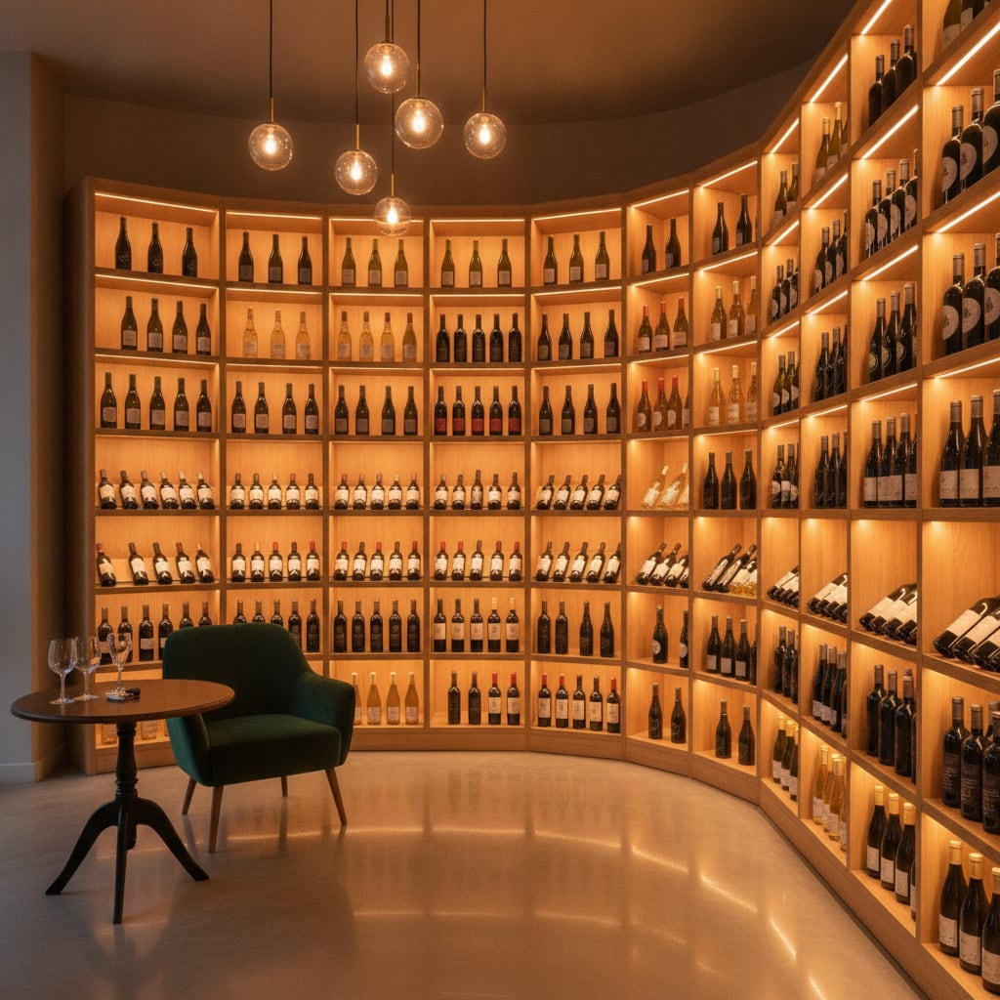
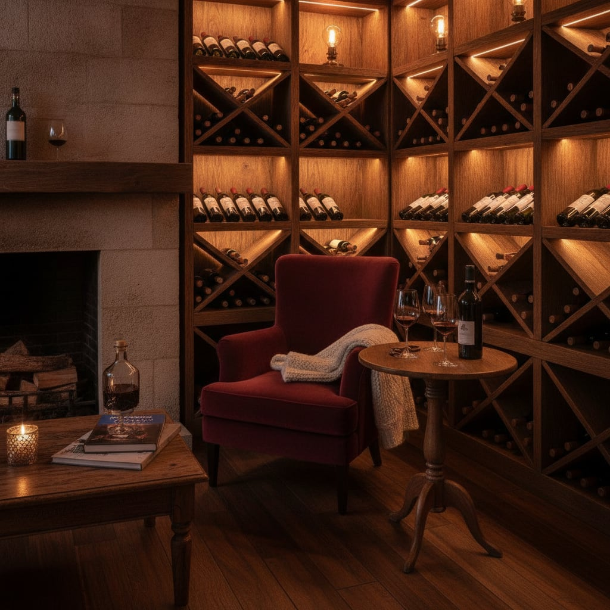
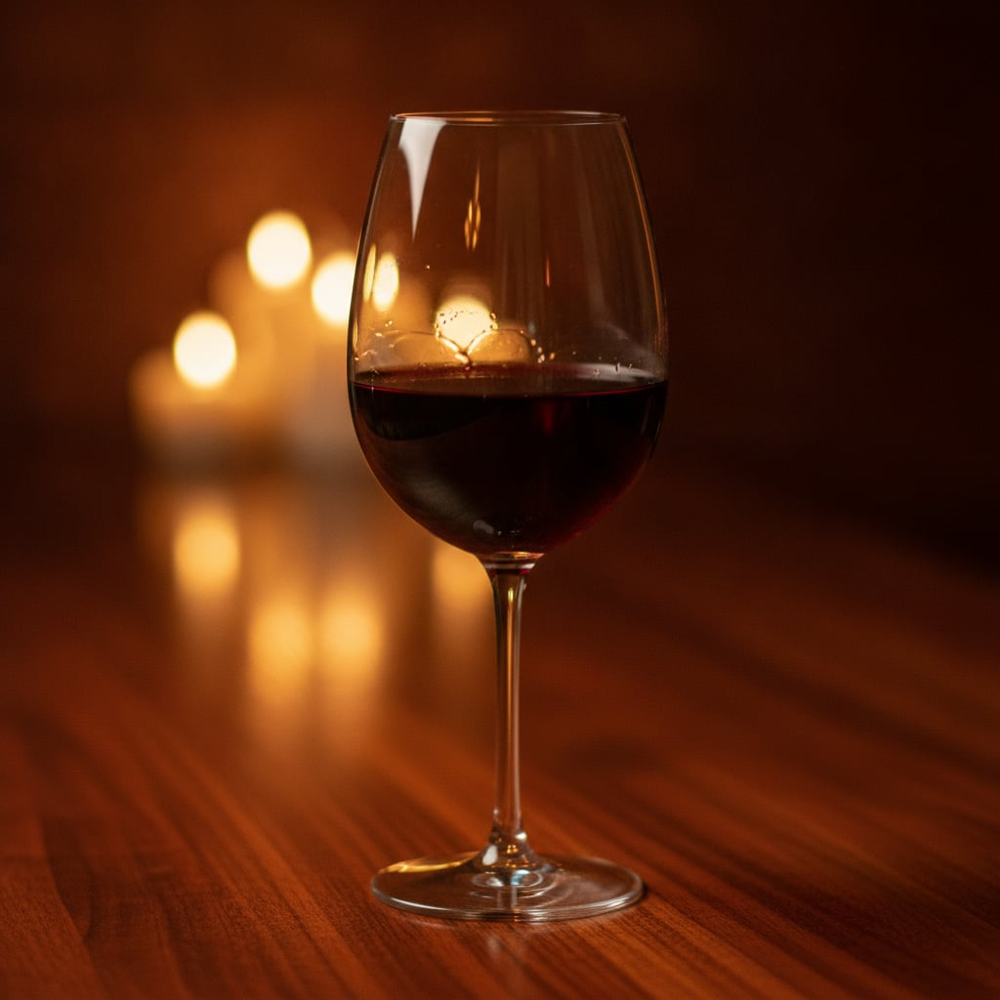
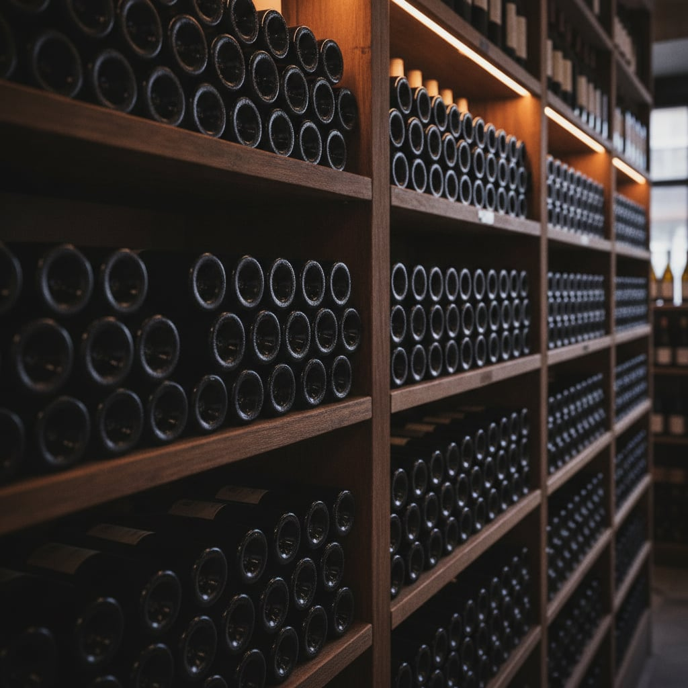

Rruga Kont Urani · Tiranë
Çdo verë, një histori.
Dyqan vere në qendër të Tiranës. Vera të zgjedhura nga Shqipëria, Italia, Franca e Spanja, dhe këshillë miqësore për shishen e duhur.
Një cep për ata
që e duan verën
Wine Corner është një dyqan i vogël me një ide të madhe: të mbajë në rafte vera që ia vlen të hapen. Çdo shishe e zgjedhur me dorë, e provuar, dhe e mbajtur sepse ka diçka për të treguar.
Hyr brenda, na thuaj çfarë po kërkon dhe për cilën rasti. Të nisesh nga një darkë e qetë në shtëpi e deri te një dhuratë që duhet të lërë mbresë, gjen këtu dikë që e njeh secilën shishe në rafte.

Çfarë gjen në rafte
Nga rrushi vendas i Shqipërisë te shtëpitë klasike të Evropës, e gjitha e zgjedhur shije pas shijeje.
- 01
Vera shqiptare
Rrush vendas dhe kantina të vogla që po e shkruajnë emrin e verës shqiptare.
- 02
Vera italiane
Nga veriu te jugu, etiketa që e dinë mirë se çfarë do të thotë një darkë e gjatë.
- 03
Vera franceze & spanjolle
Klasike që mbajnë emër, për ata që duan një shishe me histori prapa.
- 04
Pije të rafinuara
Përtej verës, distilate dhe pije që plotësojnë një tryezë ose një dhuratë.
- 05
Përzgjedhje speciale
Shishe të kufizuara dhe vintage që i mbajmë veçmas, për rastet që e kërkojnë.
- 06
Këshillë vere
Na thuaj rastin dhe buxhetin, dhe largohesh me shishen e duhur në dorë.

Shishja e duhur
nuk është rastësi
Të zgjedhësh verën nuk duhet të jetë lojë me fat. Na trego çfarë po gatuan, kë po pret, ose çfarë të pëlqeu herën e fundit, dhe nisemi nga aty.
- Çiftim me ushqimin, nga peshku te mishi i pjekur
- Dhurata të mbështjella, gati për t'u dhënë
- Sugjerime sipas buxhetit, pa presion
Brenda dyqanit

Kalo nga dyqani
dhe zgjidhim bashkë
Je pranë Bllokut, te Rruga Kont Urani. Hyr brenda për një bisedë mbi verën, ose na telefono më parë dhe ta kemi gati shishen kur të vish.